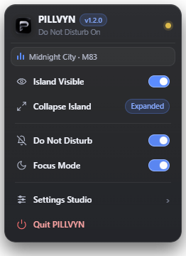

Dynamic Island & Gestures
Frameless Quiet Obsidian Glass capsule with Minimized, Compact, and Expanded spring states, hover-to-peek controls, scroll volume, pointer swipe gestures, Pin lock, and click-outside dismissal.
PILLVYN brings a refined, gesture-first Dynamic Island to your desktop — uniting event-driven Windows media controls, WASAPI audio callbacks, hardware & GPU telemetry, Steam/browser downloads, clipboard history, and gaming focus into a calm, near-zero-idle hub.
Interactive UI state preview — full native Windows telemetry runs inside the installed desktop application.
Frameless Quiet Obsidian Glass capsule with Minimized, Compact, and Expanded spring states, hover-to-peek controls, scroll volume, pointer swipe gestures, Pin lock, and click-outside dismissal.
Event-driven WinRT track & timeline updates, extracted album artwork, and instant session switcher chips across Spotify, Edge, Chrome, Firefox, Opera, and VLC.
COM callback volume & mute HUD sync, default output/input device switching (`IPolicyConfig`), cached WMI + DDC/CI brightness, battery status, and Windows connectivity links.
Unified Monitor drawer uniting CPU, RAM, disks, DXGI/PDH/NVML GPU telemetry, network `GetIfTable2` + ICMP latency + VPN status, and active downloads.
Native Win32 `SetWinEventHook`, `SHQueryUserNotificationState`, and `RegGetValueW` Steam detection auto-applies profiles and focus without DLL injection or child processes.
Zero-polling `AddClipboardFormatListener` history, timers & Open-Meteo weather, quick shortcuts, local `plugin.json` cards, and strictly opt-in local Ollama AI.



Built on Rust and Tauri 2 using WebView2 instead of bundling a separate Chromium runtime. Media uses GSMTC events, audio uses WASAPI callbacks, focus tracking uses `SetWinEventHook`, and clipboard uses `WM_CLIPBOARDUPDATE`.
Per-window Tauri v2 capability isolation, strict Quick Action and URL validation, sensitive clipboard token filtering, consent-gated GitHub Release update checks, and strictly optional local Ollama AI support.
Packaged as a standalone x64 NSIS setup executable with Start Menu & Desktop shortcuts, clean upgrade shutdown hooks, SHA-256 verification, and automatic WebView2 check.
GitHub Releases → PILLVYN_1.2.0_x64-setup.exe